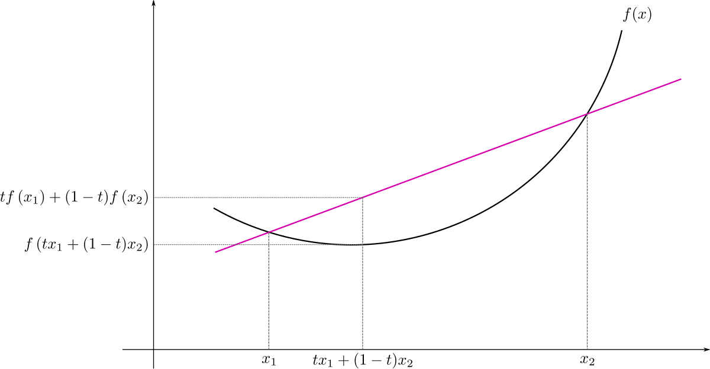
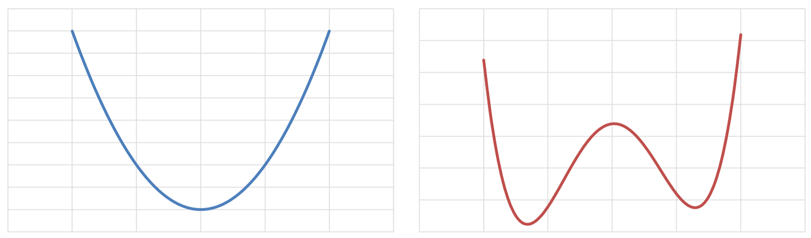
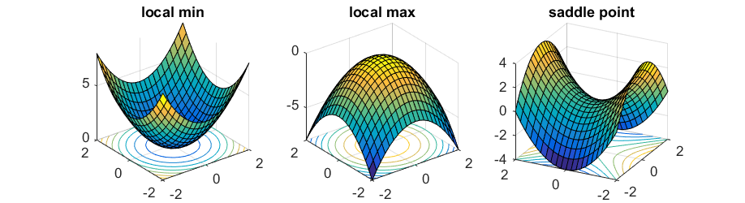
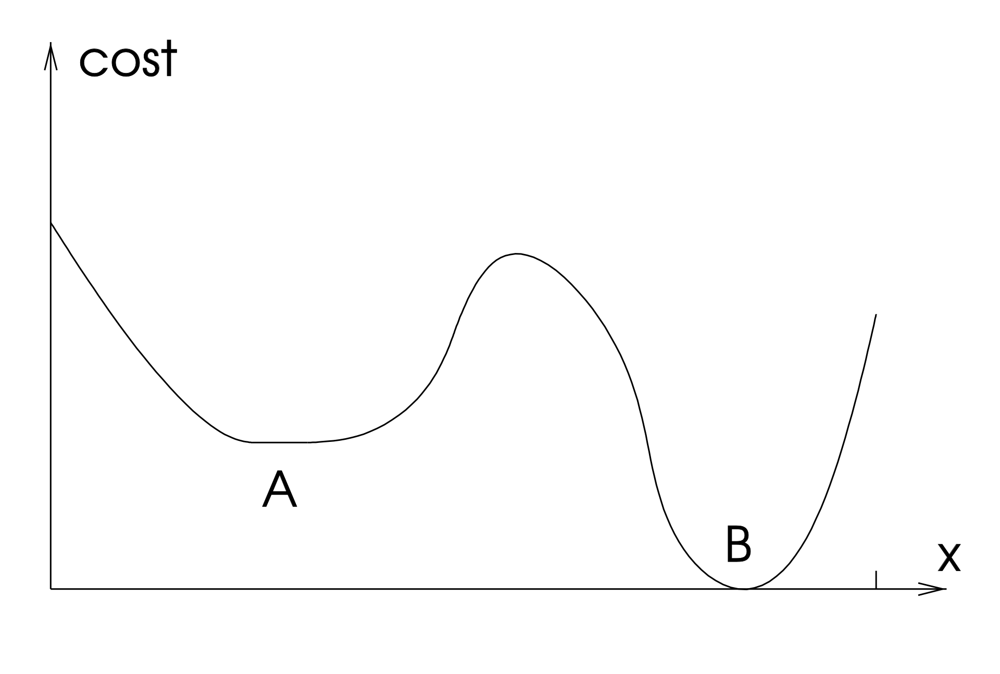

Gradient Descent#
Consider a general continuous function \(f: \mathbb{R}^n \to \mathbb{R}\). Given a set of admissible solutions \(\Omega \subseteq \mathbb{R}^n\), an optimization problem is a problem of the form
If \(\Omega = \mathbb{R}^n\), we say that the optimization is unconstrained. If \(\Omega \subset \mathbb{R}^n\), the problem is constrained. In the following, we will always assume \(\Omega = \mathbb{R}^n\), i.e. the unconstrained setup.
Convexity#
A common assumption in optimization is the convexity. By definition, a function \(f: \mathbb{R}^n \to \mathbb{R}\) is convex if

The importance of convex functions in optimization is that if \(f(x)\) is convex, than every minimum point \(x^*\) of \(f(x)\) is a global minimum and the set of global minima is connected (the \(n\)-dimensional extension of the concept of interval).
On the other side, if a function is non-convex (NOTE: the opposite of convex is not concave), then there can be multiple distinct minimum points, some of which are local minimum while others are global minimum.

Since optimizing convex functions is easier compared to non-convex functions, due to the absence of local minima, we will consider convex objective function for most of the coming discussion.
First-order conditions#
Most of the algorithms to find the minimum points of a given function \(f(x)\) are based on the following property:
First-order sufficient condition: If \(f: \mathbb{R}^n \to \mathbb{R}\) is a continuously differentiable function and \(x^* \in \mathbb{R}^n\) is a minimum point of \(f(x)\), then \(\nabla f(x^*) = 0\).
Moreover, it holds:
First-order necessary condition: If \(f: \mathbb{R}^n \to \mathbb{R}\) is a continuously differentiable function and \(\nabla f(x^*) = 0\) for \(x^* \in \mathbb{R}^n\), then \(x^*\) is either a (local) minimum, a (local) maximum or a saddle point of \(f(x)\).
Consequently, we want to find a point \(x^* \in \mathbb{R}^n\) such that \(\nabla f(x^*) = 0\). Those points are called stationary points of \(f(x)\).

Gradient descent (GD)#
The most common algorithm to solve optimization problems is the so-called Gradient Descent (GD). It is an iterative algorithm, i.e. an algorithm that iteratively updates the estimate of the solution, defined as:
where the initial iterate, \(x_0 \in \mathbb{R}^n\), is given as input and the step-size (equivalently, learning rate) \(\alpha_k > 0\) controls the decay rapidity of \(f(x)\) for any \(k \in \mathbb{N}\).
Note
The gradient descent algorithm is an example of descent methods:
where the descent direction \(p_k\) has to be chosen such that for any \(k \in \mathbb{N}\):
to assure convergence to a stationary point. Since for GD, \(p_k = - \nabla f(x_k)\), then the condition above is always satisfied:
Therefore, GD algorithm always converge to a stationary point in the limit of infinite iterations.
Choice the initial iterate#
The Gradient Descent (GD) algorithm, require the user to input an initial iterate \(x_0 \in \mathbb{R}^n\). Theoretically, since GD has a global convergence proprerty, for any \(x_0\) it will always converge to a stationary point of \(f(x)\), i.e. to a point such that \(\nabla f(x) = 0\).
If \(f(x)\) is convex, then every stationary point is a (global) minimum of \(f(x)\), implying that the choice of \(x_0\) is not really important, and we can always set \(x_0 = 0\). On the other side, when \(f(x)\) is not convex, we have to choose \(x_0\) such that it is as close as possible to the right stationary point, to increase the chances of getting to that. If an estimate of the correct minimum point is not available, we will just consider \(x_0 = 0\) to get to a general local minima.
Step Size#
Selecting the step size is arguably the hardest component of gradient descent algorithm. Indeed, there are three possible scenario that happens in selecting the step size:
\(\alpha_k\) is too small \(\implies\) we never get to the minimum, getting closer and closer without reaching it. Moreover, we can easily get stuck on local minima when the objective function is non convex.
\(\alpha_k\) is too large \(\implies\) we get stuck, bouncing back and forth around the minima.
\(\alpha_k\) is correct \(\implies\) we reach the stationary point.

Backtracking#
Fortunately, there is a way to guarantee that the chosen step-size \(\alpha_k\) is correct. Indeed, it is possible to prove that, if \(\alpha_k\) satisfies the following conditions (known as Wolfe Conditions):
Sufficient decrease: \( f(x_k - \alpha_k \nabla f(x_k)) \leq f(x_k) - c_1 \alpha_k || \nabla f(x_k) ||_2^2 \);
Curvature condition: \(\nabla f(x_k)^T \nabla f(x_k - \alpha_k \nabla f(x_k)) \leq c_2 || \nabla f(x_k) ||_2^2\);
with \(0 < c_1 < c_2 < 1\), for any \(k \in \mathbb{N}\), then the associated GD algorithm will always converge to a stationary point. In particular, the Sufficient decrease condition, also known as Armijo Condition is of particular importance. It requires that \(x_{k+1}\) causes a reduction in the value of \(f\) compared to \(x_k\) which is large enough. Indeed, note that the Armijo condition rewrites:
meaning that the reduction in the function \(f\) due to \(x_{k+1}\) has to be at least as big as a multiple of \(|| \nabla f(x_k) ||_2^2\).
These conditions are automatically satisfied if \(\alpha_k\) is chosen by the backtracking algorithm. The idea of this algorithm is to begin with an initial guess for \(\alpha_k\), which is then reduced as \(\alpha_k \leftarrow \tau \alpha_k\) with \(\tau < 1\) until the Armijo condition is satisfied. It can be proved that when \(\alpha_k\) is computed this way, the second Wolfe condition is automatically satistfied. A Python implementation for the backtracking algorithm can be found in the following.
import numpy as np
def backtracking(f, grad_f, x):
"""
This function is a simple implementation of the backtracking algorithm for
the GD (Gradient Descent) method.
f: function. The function that we want to optimize.
grad_f: function. The gradient of f(x).
x: ndarray. The actual iterate x_k.
"""
alpha = 1
c = 0.8
tau = 0.25
while f(x - alpha * grad_f(x)) > f(x) - c * alpha * np.linalg.norm(grad_f(x), 2) ** 2:
alpha = tau * alpha
return alpha
Stopping Criteria#
The gradient descent is an iterative algorithm, meaning that it iteratively generates new estimates of the minima, starting from \(x_0\). Theoretically, after infinite iterations, we converge to the solution of the optimization problem but, since we cannot run infinite iterations, we have to find a way to tell the algorithm when its time to stop. A convergence condition for an iterative algorithm is called stopping criteria.
Remember that gradient descent aim to find stationary point. Consequently, it would make sense to use the norm of the gradient as a stopping criteria. In particular, it is common to check if the norm of the gradient on the actual iterate is below a certain tollerance and, if so, we stop the iterations. In particular
Stopping criteria 1: Given a tollerance tol_f, for any iterate \(x_k\), check whether or not \(|| \nabla f(x_k) || \leq tol_f || \nabla f(x_0) ||\). If so, stop the iterations.
Unfortunately, this condition alone is not sufficient. Indeed, if the function \(f(x)\) is almost flat around its minimum, then \(|| \nabla f(x_k) ||\) will be small even if \(x_k\) will be far from the true minimum.

Consequently, its required to add another stopping criteria.
Stopping criteria 2: Given a tollerance tol_x, for any iterate \(x_k\), check whether or not \(|| x_k - x_{k-1} || \leq tol_x\). If so, stop the iterations.
Moreover, to stop the algorithm from running indefinitely, it is always recommended to add an additional variable, maxit, which automatically stops the algorithm if more than maxit iterations have been performed. When this happens, it is suggested to also tell the user that the algorithm stopped due to maxit condition, therefore it didn’t converge.
The choice for the parameters tol_f, tol_x and maxit is free and depends on the specific application. Usually, tol_f and tol_x are chosen in the range [1e-4, 1e-6], while maxit \(\approx\) 1000.
Exercise: Write a script that implement the GD algorithm, with the following structure:
Input:
f: the function \(f(x)\) we want to optimize. It is supposed to be a Python function, not an array.grad_f: the gradient of \(f(x)\). It is supposed to be a Python function, not an array.x0: an \(n\)-dimensional array which represents the initial iterate.alpha: a float. The fixed step size as input.maxit: an integer. The maximum possible number of iterations (to avoid infinite loops).tolf: small float. The relative tollerance of the algorithm. Convergence happens if ||grad_f(x_k)||_2 < tolf ||grad_f(x_0)||_2tolx: small float. The tollerance in the input domain. Convergence happens if ||x_{k} - x_{k-1}||_2 < tolx. Pay attention to to the first iterate.
Output:
x: an array that contains the value of x_k FOR EACH iterate x_k (not only the latter).k: an integer. The number of iteration needed to converge. k < kmax.f_val: an array that contains the value of f(x_k) FOR EACH iterate x_k.grad_norm: an array the contains the value of ||grad_f(x_k)||_2 FOR EACH iterate x_k.
Then test the function above to optimize the objective function:
With different value of \(\alpha\). Plot the value of the objective functions and the norm of the gradient to compare the behavior with different values of \(\alpha\).
Moreover, compute the minimum of \(f(x)\) by hand. Compute the relative error between the obtained solution with GD algorithm and the one computed by hand for each different choice of \(\alpha\).
Exercise: Write a script that implement the GD algorithm with backtracking, with the same structure as the GD algorithm defined above, with the exception of the input alpha, which is not required. Compared the results obtained by this algorithm with the ones obtained in the previous exercise.
Exercise: Test the GD algorithm with and without backtracking on the Rosenbrock function, defined as:
for different values of \(x_0\).